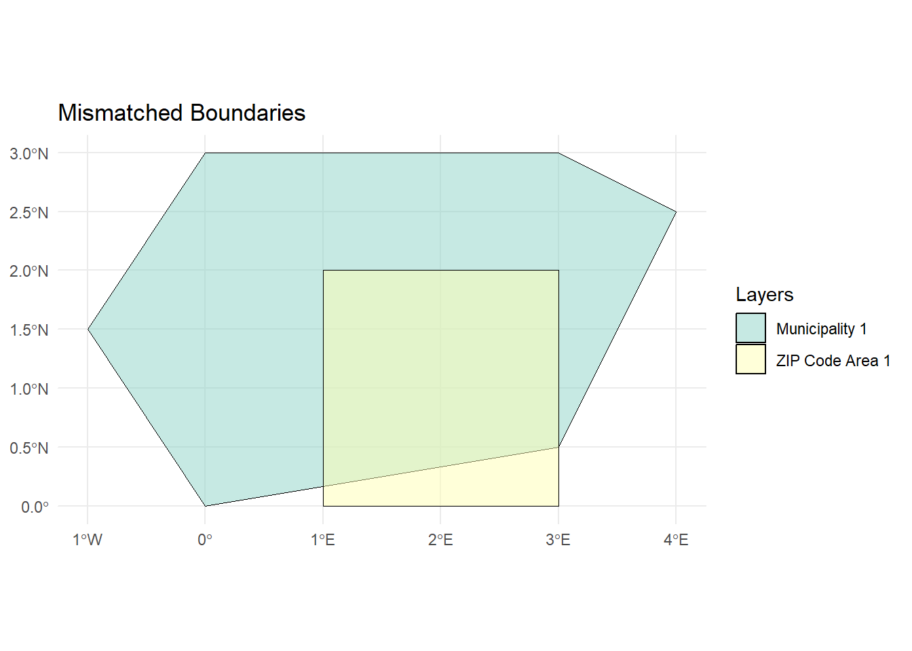
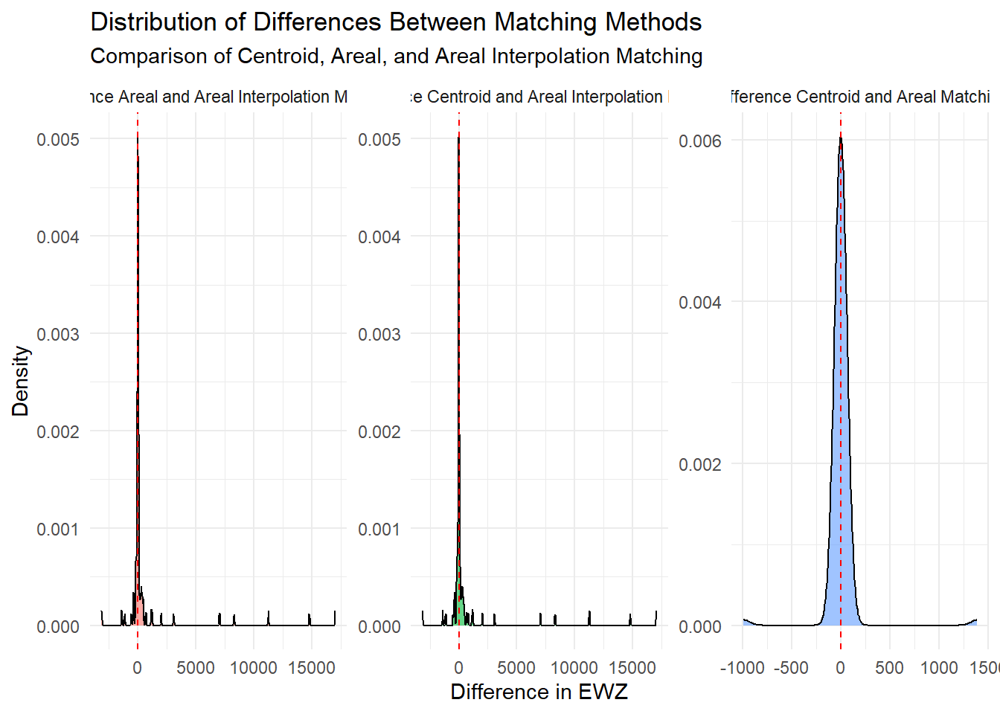

Assessment of Uncertain Geospatial Linking
Introduction
Data integration of social indicators from surveys with geospatial context variables has rapidly progressed in recent years. Applications in the social sciences are manifold, covering issues such as conflict and migration, political participation, environmental attitudes, and inequality. Geospatial approaches allow researchers to introduce new perspectives in explaining societal processes and emphasize the local aspects of globally relevant questions.
The linking process is crucial for this line of research but is prone to certain pitfalls, such as mismatched geospatial units. In many (online) surveys, respondents can indicate where they live by, for example, entering the ZIP code of their home address. This information allows for the linking of contextual information about the respondents’ living environment to the survey data. However, contextual information is often not available at the ZIP code level. Instead, it refers to administrative units such as municipalities. These two different spatial units often do not overlap, increasing uncertainty in the linking process.
This tool addresses this challenge by highlighting linking techniques that can be used to successfully link the datasets and assessing the uncertainty of the linking process.
As an example, this tool application addresses the discourse on the rural-urban divide, which has received considerable attention in recent years in Western democracies. Rural areas can serve as breeding grounds for political discontent because citizens’ perceptions of their living environment may foster a sense of neglect, resource deprivation, and lack of societal respect. Consequently, citizens may become more susceptible to far-right narratives, which could explain the rise of populist and far-right sentiments in rural areas. Therefore, the central research question is: Is living in a less densely populated area, such as a rural place, associated with far-right party preferences?
Data Descritpion
For this tool application, we rely on three data sources: (synthetic) survey data, the geographies of German ZIP code areas and the geographies of German municipalities including attributes of interests, in this case population density.
We base our analysis on survey data from the German Longitudinal Election Study (GLES). The GLES Tracking consists of short cross-sectional online surveys (CAWI) conducted three times a year. Each cross-sectional sample includes approximately 1,000 respondents. For this analysis, we use data from the “GLES Tracking November 2023, T56” (https://search.gesis.org/research_data/ZA7714). Respondents were asked to indicate their approval of the German radical right party AfD on a scale from -5 (“I don’t think highly of this party at all”) to +5 (“I think very highly of this party”) (variable t14i). At the end of the questionnaire, they were also asked to enter the 5-digit ZIP code of their primary residence (variable t71).
Note
Due to data protection regulations, ZIP codes cannot be published in the Scientific Use Files of the survey data but only accessed through the Secure Data Center at GESIS [add link]. For this tool application, we provide synthetic ZIP codes to illustrate the linking process.
The two additional data sources provide the necessary geographies of ZIP code areas and municipalities and their corresponding attributes. We rely on the Open Data portal ArcGIS Hub to access the geometries of the German ZIP code areas (add link) and municipalities (add link). Data can be downloaded directly as a shapefile or GeoJSON file.
Expand To Learn About Geospatial Dataformats
We work with a geospatial data type called vector data, which is organized similarly to any other data table: each row represents a geometric object (e.g., a ZIP code area or a municipality), and each column holds an attribute (e.g., population density). For detailed information on handling geospatial data and using the package sf, refer to the course [Git repository of Anne and Stefan] (add link).
Assessing the Spatial Linkage
Tool functions
Getting started
library(dplyr)
library(ggplot2)
library(sf)
library(tibble)zip_codes <-
sf::st_read("../raw-data/zip_2023_ger.geojson") |>
sf::st_make_valid()Reading layer `zip_2023_ger' from data source
<<<<<<< HEAD
`C:\Users\stroppan\Documents\zipmatching\raw-data\zip_2023_ger.geojson'
using driver `GeoJSON'
=======
`H:\zipmatching\raw-data\zip_2023_ger.geojson' using driver `GeoJSON'
>>>>>>> 05721627a8409f46a137bda6e7d2cdb35641d945
Simple feature collection with 8170 features and 5 fields
Geometry type: MULTIPOLYGON
Dimension: XY
Bounding box: xmin: 5.866315 ymin: 47.27011 xmax: 15.04193 ymax: 55.05868
Geodetic CRS: WGS 84municipalities <-
sf::st_read("../raw-data/mun_2022_ger.geojson") |>
sf::st_make_valid()Reading layer `mun_2022_ger' from data source
<<<<<<< HEAD
`C:\Users\stroppan\Documents\zipmatching\raw-data\mun_2022_ger.geojson'
using driver `GeoJSON'
=======
`H:\zipmatching\raw-data\mun_2022_ger.geojson' using driver `GeoJSON'
>>>>>>> 05721627a8409f46a137bda6e7d2cdb35641d945
Simple feature collection with 10990 features and 18 fields
Geometry type: MULTIPOLYGON
Dimension: XY
Bounding box: xmin: 5.86625 ymin: 47.27012 xmax: 15.04182 ymax: 55.05878
Geodetic CRS: WGS 84# add GLES data
set.seed(241021)
zip_codes_sample <-
zip_codes |>
dplyr::slice_sample(n = 100) |>
sf::st_sample(1000) |>
sf::st_as_sf() |>
sf::st_join(zip_codes) |>
dplyr::arrange(plz) |>
dplyr::mutate(id = 1:dplyr::n()) |>
dplyr::select(id, plz)
zip_codes_reduced <-
zip_codes_sample |>
sf::st_drop_geometry() |>
dplyr::left_join(zip_codes, by = "plz") |>
dplyr::distinct(plz, note, einwohner, geometry) |>
sf::st_as_sf()Inspecting data
Linking methods
Centroid linking
centroid_matched <-
zip_codes_reduced |>
sf::st_point_on_surface() |>
sf::st_join(municipalities) |>
dplyr::select(plz, einwohner, AGS) |>
dplyr::distinct() |>
sf::st_drop_geometry() |>
dplyr::left_join(municipalities, by = "AGS") |>
sf::st_as_sf() |>
dplyr::select(plz, AGS, einwohner, EWZ)Areal matching
# filter using bounding boxes to reduce the computational cost of st_join() by filtering out unnecessary geometries before the spatial join
# find pairs of geometries that have overlapping bounding boxes
bounding_intersection <- sf::st_intersects(zip_codes_reduced, municipalities, sparse = FALSE)
# subset the 'municipalities' dataset to only those that intersect with zip codes
municipalities_filtered <- municipalities[apply(bounding_intersection, 2, any), ]
# perform the spatial join on the reduced dataset
areal_matched <- zip_codes_reduced |>
sf::st_join(municipalities_filtered, left = TRUE, largest = TRUE) |>
dplyr::select(plz, einwohner, AGS) |>
dplyr::distinct() |>
sf::st_drop_geometry() |>
dplyr::left_join(municipalities, by = "AGS") |>
sf::st_as_sf() |>
dplyr::select(plz, AGS, einwohner, EWZ)Areal interpolation
areal_interpolation_matched <-
sf::st_interpolate_aw(
municipalities_filtered["EWZ"],
zip_codes_reduced,
extensive = FALSE
) |>
dplyr::bind_cols(
zip_codes_reduced |>
sf::st_drop_geometry() |>
dplyr::select(plz, einwohner)
) |>
dplyr::select(plz, einwohner, EWZ)Comparison of linking process
diff_centroid_areal <-
tibble::tibble(
`Difference Type` = "Difference Centroid and Areal Matching",
Difference = centroid_matched$EWZ - areal_matched$EWZ
)
diff_centroid_interpolated <-
tibble::tibble(
`Difference Type` = "Difference Centroid and Areal Interpolation Matching",
Difference = centroid_matched$EWZ - areal_interpolation_matched$EWZ
)
diff_areal_interpolated <-
tibble::tibble(
`Difference Type` = "Difference Areal and Areal Interpolation Matching",
Difference = areal_matched$EWZ - areal_interpolation_matched$EWZ
)
# Combine difference data into a single tibble
combined_differences <- dplyr::bind_rows(
diff_centroid_areal,
diff_centroid_interpolated,
diff_areal_interpolated
)
# Create density plots to compare differences
ggplot(combined_differences, aes(x = Difference, fill = `Difference Type`)) +
geom_density(alpha = 0.6) + # Semi-transparent density plots for better visual comparison
facet_wrap(~`Difference Type`, scales = "free") + # Create separate plots for each comparison
geom_vline(xintercept = 0, linetype = "dashed", color = "red") + # Add vertical line at zero
labs(
x = "Difference in EWZ", # Label the x-axis
y = "Density", # Label the y-axis
title = "Distribution of Differences Between Matching Methods",
subtitle = "Comparison of Centroid, Areal, and Areal Interpolation Matching"
) +
theme_minimal() + # Clean theme
theme(legend.position = "none") # Hide legend since facets are already labeled